| 2015/01 10 Sat | (*いおり_(．．*)vol.21) |
みなさんこんばんはー！
高校2年生17歳
さがらいおりです！
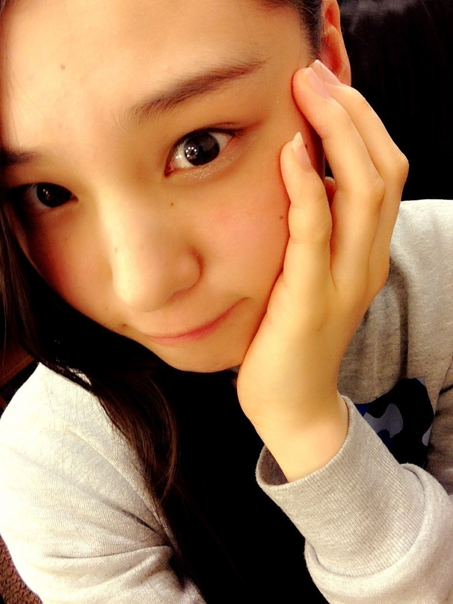
今日は写真たくさんだよー♡
お渡し会
いおりはTSUTAYAさんで頑張りました！
真夏さん、川後さん、優里さんと
4 人でやったんですけど、
わいわいできて楽しかったです♪♪
たくさんの方が来て下さって
とっても楽しかったです：）
ありがとうございました♡
ひなことみり愛と
たくさん写真撮ったよ♡
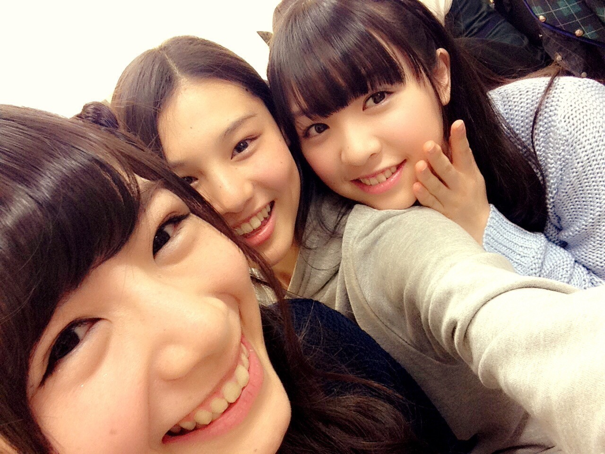
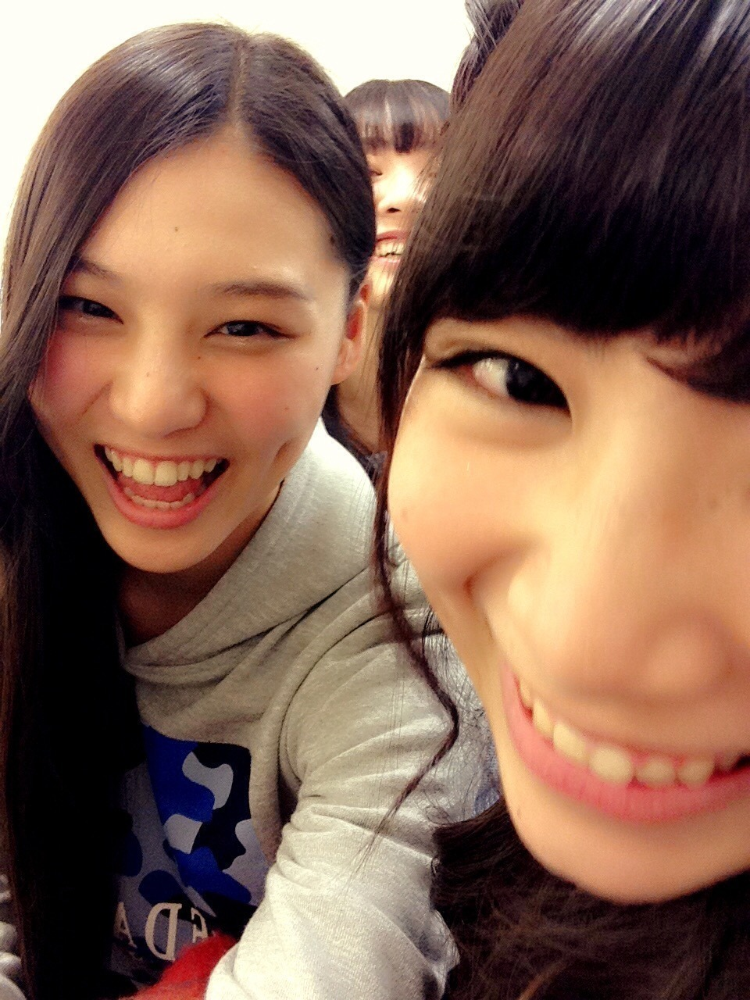
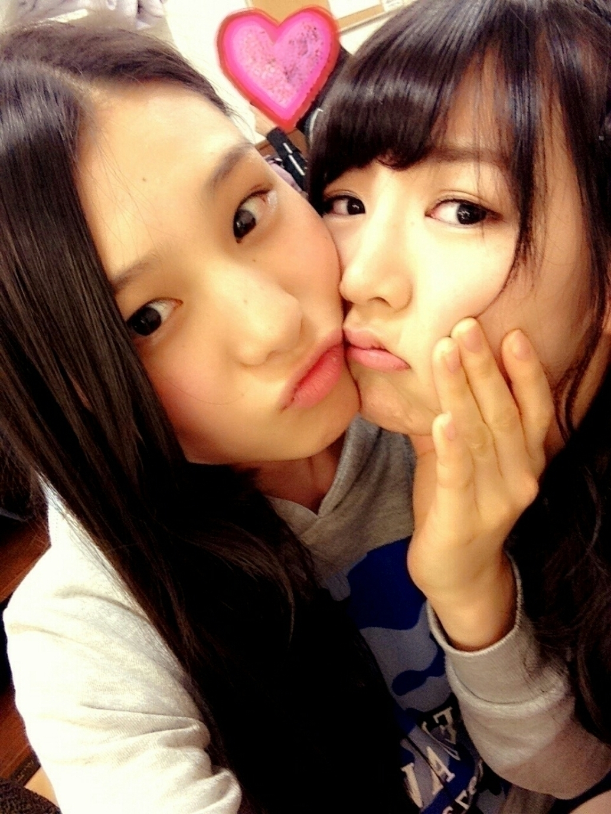
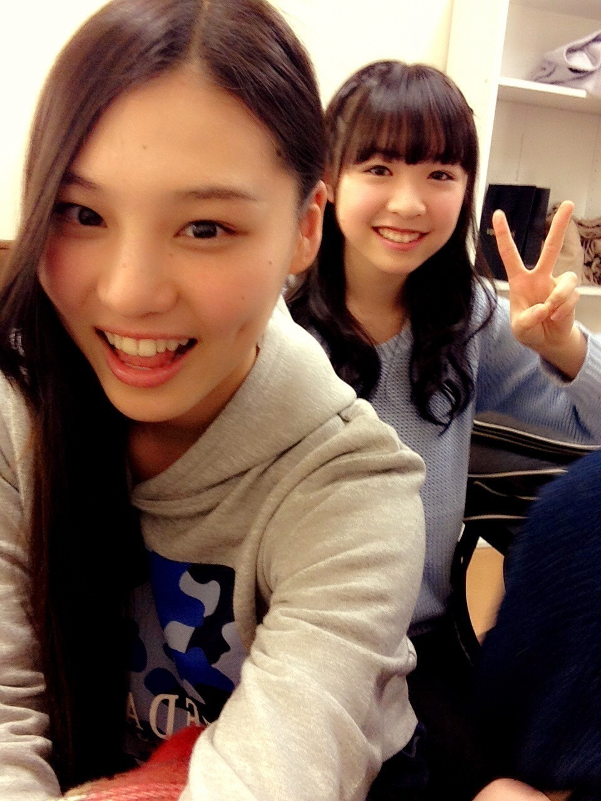
ひなことみり愛
ひ : 日奈子の真似して～
み : えー、んー、
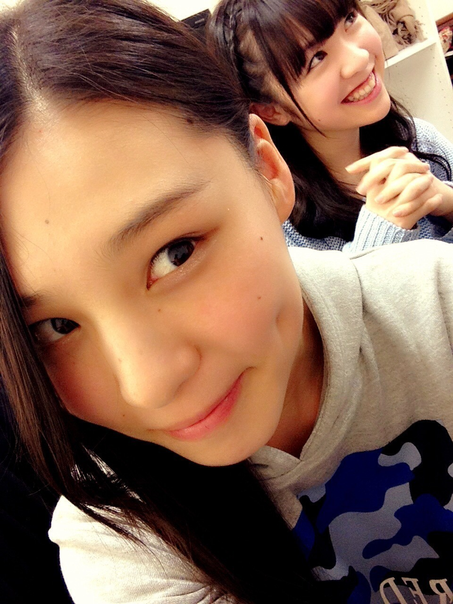
み : んー、
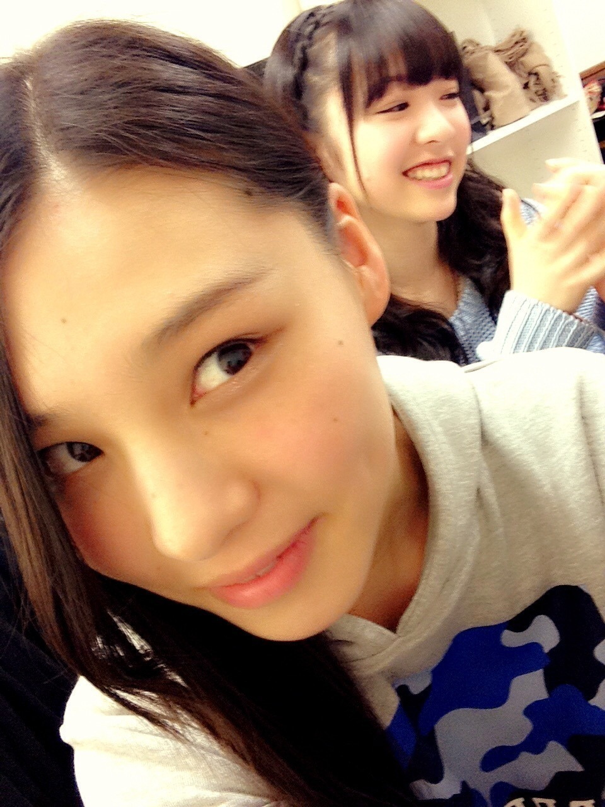
み : (あっ！)
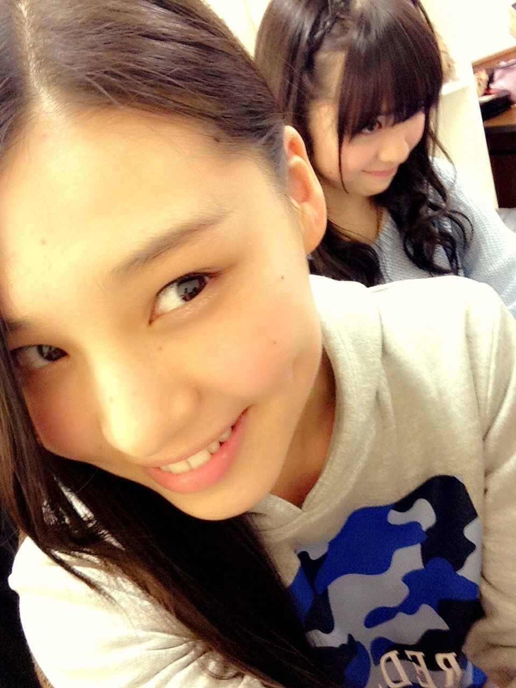
多分やりたいことはこれだよね
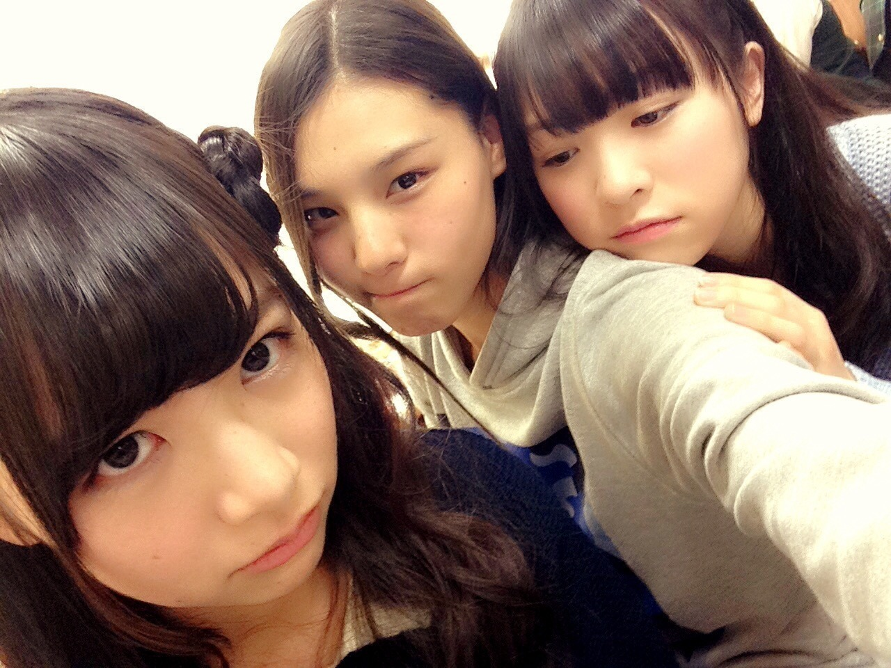
1 / 7
乃木坂46 1 stアルバム｢透明な色｣
発売になりました！！
｢自由の彼方｣｢傾斜する｣は
いおりも歌ってます♪♪
ぜひ聞いて下さいね♡
~いおり庵~
 ずっと思ってたんだけどいおりは755はやらないの？
ずっと思ってたんだけどいおりは755はやらないの？
いおりはね、やらないよ！
いおりんは学校卒業したら髪染めるの？
いおりはできれば
一生染めずに生きていけたらと思ってる♪♪
伊織もし握手会行ったらなんて呼べばいい？
いおりがいいな！！
いおりちゃん年が変わる時何してましたか？
テレビの前にいました
初詣には行ったかな？
1 / 5 に友達と浅草寺に行ってきたよー！
そこでおみくじ引いたらね、
｢半吉｣
でした。
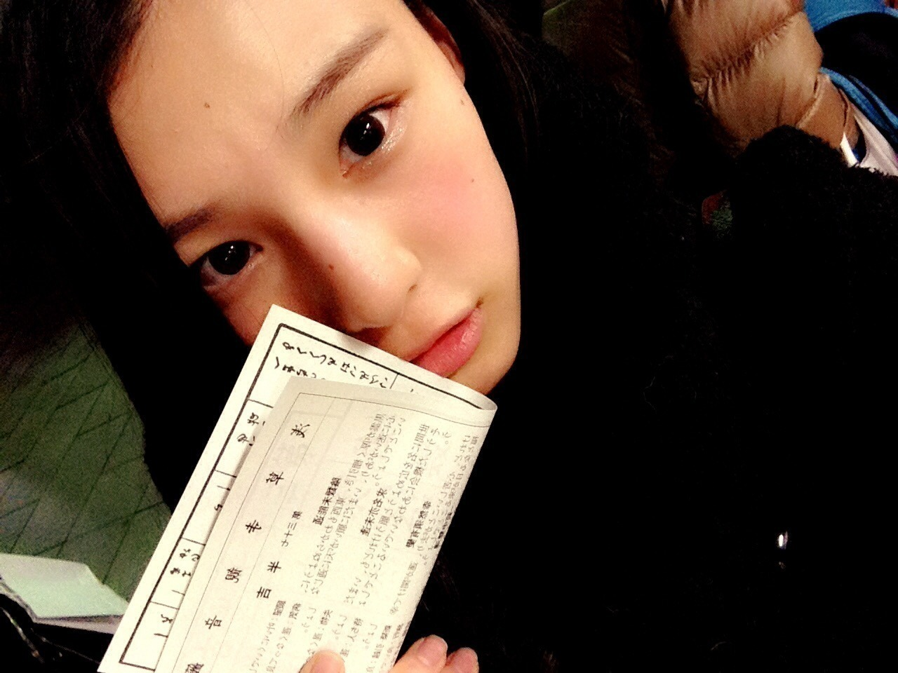
｢半吉｣って聞いたことありますか？
あと、チョコバナナとみかん飴食べました♡
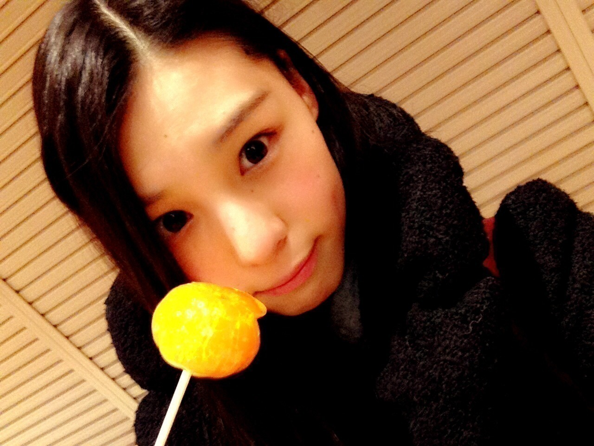
あと、メンバーみんなで
乃木神社にも行きました！！
ガキ使どこが一番印象に残ってる？
いおりはね、
鬼ごっこが一番面白かったかな：）
方正さんの足かせが笑った！！
あと、驚いてはいけないで
パラダイスさんが出てきたのは
嬉しかったかな♡
あのー、
未公開の藤原さんの
噛みまくりの説明がすごい面白かった！
お誕生日の方にメッセージ(´,,•ω•,,)♡
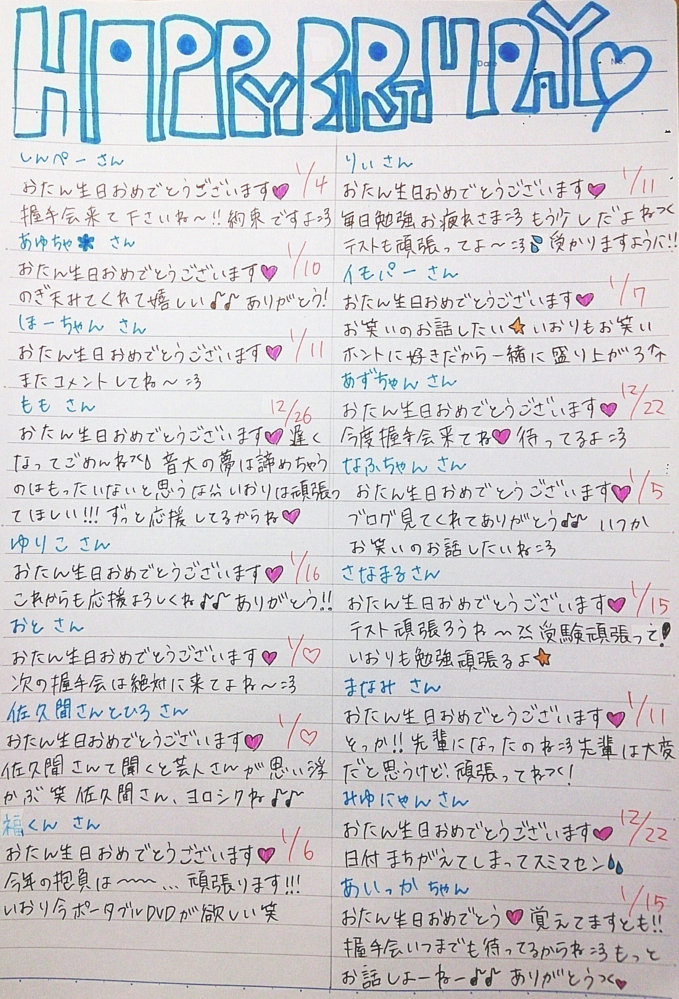
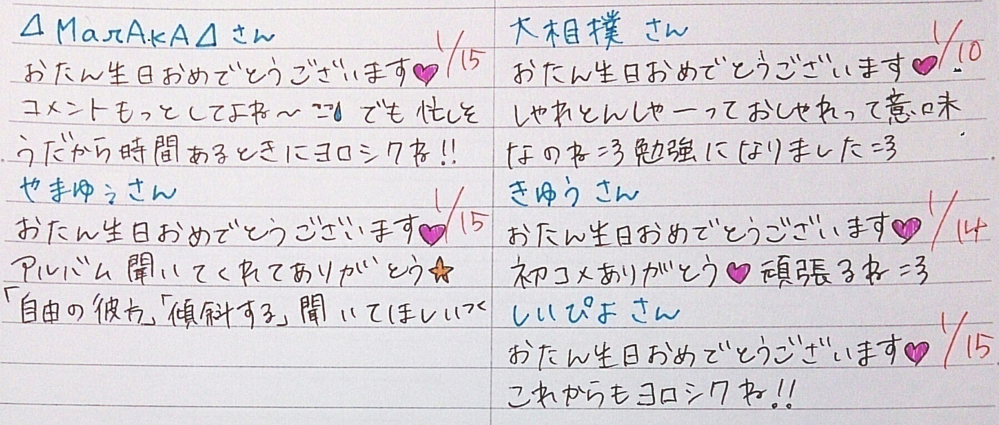
この前友達に
遅めの誕生日プレゼントで、
ウーマンさんの一番最初の
ライブDVD買ってもらったの♡
まだ見れてないけど
欲しかったから嬉しかった♡
これでウーマンさんのDVD
全部揃ったんだよー(∩´∀`∩)
それから、
いおり最近500円玉貯金始めたの！
貯金箱いっぱいになるの
楽しみだな～(^▽^)/
それからそれから、
今日はめちゃイケスペシャルと
すべらない話の日だよ！！！
録画してあるから後で見る！！
楽しみだなー♪♪
i o r i .

コメント(379)
2015/01/10 23:30